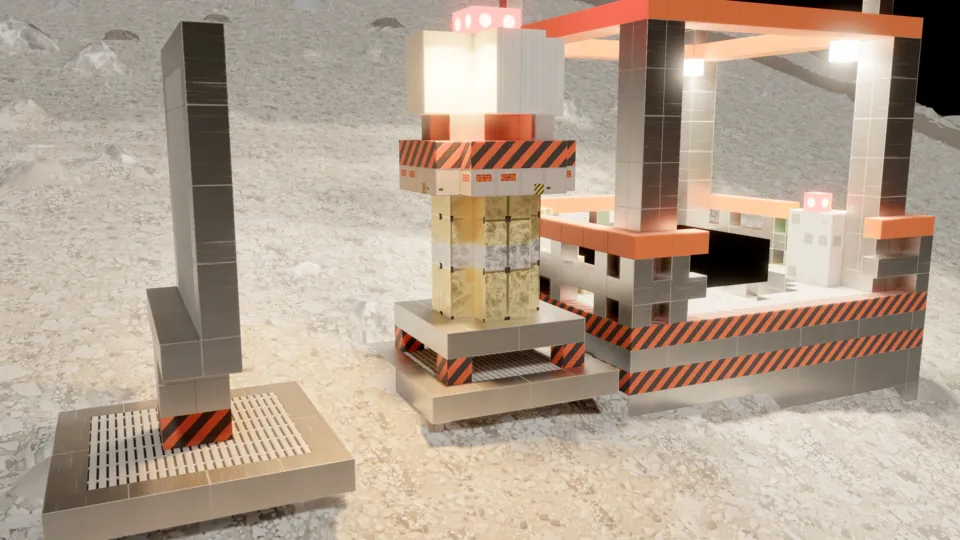

01 · Build
A base that has to work
Nothing keeps you alive by default. Sealed habitats track their pressure, oxygen, CO₂ and temperature. Heat leaks through the walls you chose. A compact reactor becomes the hearth of the base, and its radiation follows the shielding you put around it.
The sun is a weak star at 5.2 AU, and the night lasts eight Earth days. Prepare for it, or freeze.